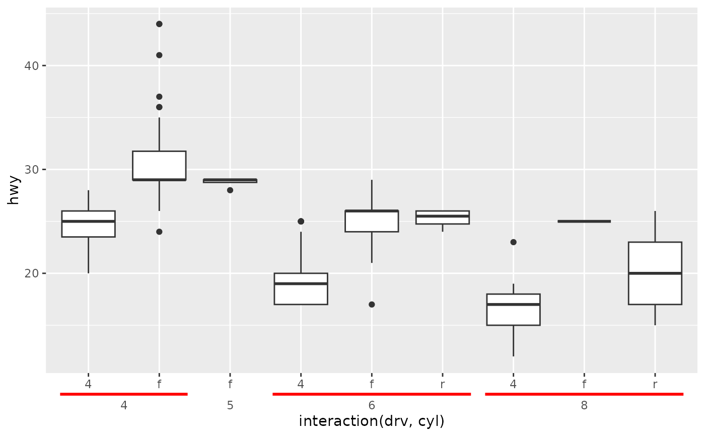
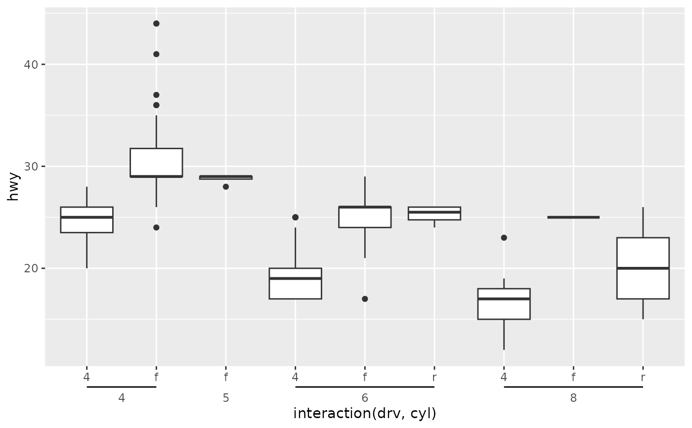

Nested axis guide
guide_axis_nested.RdLike regular axis guides, this guide is a visual representation of position scales. In addition, this axis guide has extra options to visualise various ranges in the scale.
Usage
guide_axis_nested(
range_data = NULL,
range_mapping = NULL,
range_start = NULL,
range_end = NULL,
range_name = NULL,
range_level = NULL,
sep = "[^[:alnum:]]+",
bracket = "line",
bracket_size = unit(2, "mm"),
bracket_theme = element_line(),
deep_text = element_text(),
handle_oob = "squish",
mirror_margin = TRUE,
extend_discrete = 0.4,
drop_zero = TRUE,
...
)Arguments
- range_data
An optional
data.framecontaining relevant data for ranges.- range_mapping
An optional call to
aes()with mappings forstart,end,nameand/orlevelin therange_dataargument.- range_start, range_end
Optional vectors giving the starts and ends of ranges. Overrules any
startorendaesthetic set inrange_mapping.- range_name
An optional
charactervector giving labels to use for ranges. Overrules anynamemapping set inrange_mapping.- range_level
An optional
integervector indicating at what depth a range should be displayed. This is mostly useful for overruling the default bracket dodging. Overrules anylevelmapping set inrange_mapping.- sep
A
character(1)that acts as a 'regex' pattern to split strings into different layers. No string splitting is performed when therange_*arguments are supplied.- bracket
One of the following:
A
<matrix[n, 2]>giving point coordinates for bracket shapes, such as returned from bracket functions.A
character(1)giving one of the bracket functions as a string. The current options are"sigmoid","atan","curvy","line"(default),"round","chevron"or"square".
- bracket_size
A
<unit>that sets the size of a bracket in the direction orthogonal to the axis.- bracket_theme
An
<element_line>object or<element_blank>object controlling the appearance of the brackets. By default, it inherits from theaxis.ticks.{x/y}.{position}theme setting.- deep_text
An
<element_text>object or<element_blank>object. Alternatively, a list of such elements, where every item applies to a layer of text that are not the regular labels. See alsoelements_text()to easily construct a list of text elements.- handle_oob
A
character(1)describing how to deal with out-of-bounds (oob) ranges. The default"squish"deletes ranges where the start and endpoints are on the same side of limits, and squeezes the remainers to fit inside the limits."censor"will delete ranges where any part is outside the limits."none"will retain ranges regardless of limits.- mirror_margin
A
logical(1)which ifTRUE(default), will mirror themarginfield in theaxis.text.{x/y}.{position}theme setting. IfFALSE, margins are taken as-is. This is an option because the default margins may sometimes be 0 between text and a bracket, which may look uncomfortable.- extend_discrete
A
numeric(1)giving how much brackets should be extended beyond the tick mark in discrete scales. Should be less than0.5for adjacent ranges to not touch.- drop_zero
A
logical(1)determining whether ranges with no difference, up to some tolerance, in start and end point should be drawn. IfTRUE(default), such ranges don't get brackets, and ifFALSE, such ranges do get brackets. Useful to set toFALSEwhen brackets should be drawn for single breaks in discrete scales. Note thatextend_discretehas no bearing ondrop_zero.- ...
Arguments passed on to
guide_axis_extendsubtitleA
character()orexpression()giving a subtitle for the guide. IfNULL(default), no subtitle will be shown. Iflength(subtitle) > 1, text will be distributed over axis andhjustsetting will be ignored.subtitle.themeAn
<element_text>object or<element_blank>object controlling the appearance of thesubtitleargument. By default, it inherits from the relevantaxis.text.{x/y}.{position}theme setting.cap_lower,cap_upperA way to set the lower and upper ranges for axis capping Can be one of the following:
NULLto not perform any axis capping.A
functionthat takes the break positions as input and returns the lower or upper boundary. Note that also for discrete scales, the inputs are the mapped breaks, which arenumeric. Afunctioninput can also be given as lambda syntax.A
numericvalue, in data units, for the lower and upper boundaries.A
<unit>object to set the boundaries independent of any data.
colour,colorA
character(1)with a valid colour for simultaneously changing the colour or the axis text, axis ticks and axis line. IfNULL(default), inherit colours directly from the theme. Otherwise, theme settings are overruled.minor_sizeA
numeric(1)giving the relative size of minor axis ticks relative to major axis ticks, as defined by theaxis.ticks.length.{x/y}.{position}theme element. IfNULL(default), minor axis ticks are not shown.major_sizeA
numeric(1)giving the relative size of major ticks relative to theaxis.ticks.length.{x/y}.{position}theme element. IfNULL(default), major ticks are drawn to the theme's length.titleA character string or expression indicating a title of guide. If
NULL, the title is not shown. By default (waiver()), the name of the scale object or the name specified inlabs()is used for the title.check.overlapsilently remove overlapping labels, (recursively) prioritizing the first, last, and middle labels.
angleCompared to setting the angle in
theme()/element_text(), this also uses some heuristics to automatically pick thehjustandvjustthat you probably want.n.dodgeThe number of rows (for vertical axes) or columns (for horizontal axes) that should be used to render the labels. This is useful for displaying labels that would otherwise overlap.
orderA positive
integerof length 1 that specifies the order of this guide among multiple guides. This controls in which order guides are merged if there are multiple guides for the same position. If 0 (default), the order is determined by a secret algorithm.positionWhere this guide should be drawn: one of top, bottom, left, or right.
Value
A <Guide> ggproto object that can be given to the
guides() function, or set as the guide argument
in a position scale.
See also
Other axis variants:
guide_axis_cap(),
guide_axis_extend(),
guide_axis_minor(),
guide_axis_table()
Examples
# A standard plot
p <- ggplot(mpg, aes(class, displ)) +
geom_boxplot()
# If no `range_*` argument is given, the guide tries to split the labels
p + aes(x = interaction(cyl, year)) +
guides(x = "axis_nested")
# For discrete axes, you can select the ranges either by numerical
# equivalent, or by break level.
p + guides(x = guide_axis_nested(
range_start = c("2seater", "pickup"),
range_end = c(4, 7),
range_name = c("First range", "Second range")
))

# If ranges overlap, they are automatically dodged. You can override this
# by setting the `range_level` argument.
p + guides(x = guide_axis_nested(
range_start = c(1, 3),
range_end = c(4, 6),
range_name = c("First range", "Second range")
))
# You can change the appearance of the brackets. See ?bracket_options for
# ready-to-go bracket functions.
p + aes(x = interaction(cyl, year)) +
guides(x = guide_axis_nested(
bracket = "curvy",
bracket_size = unit(5, "mm"),
bracket_theme = element_line(colour = "forestgreen"),
deep_text = element_text(colour = "tomato")
))
